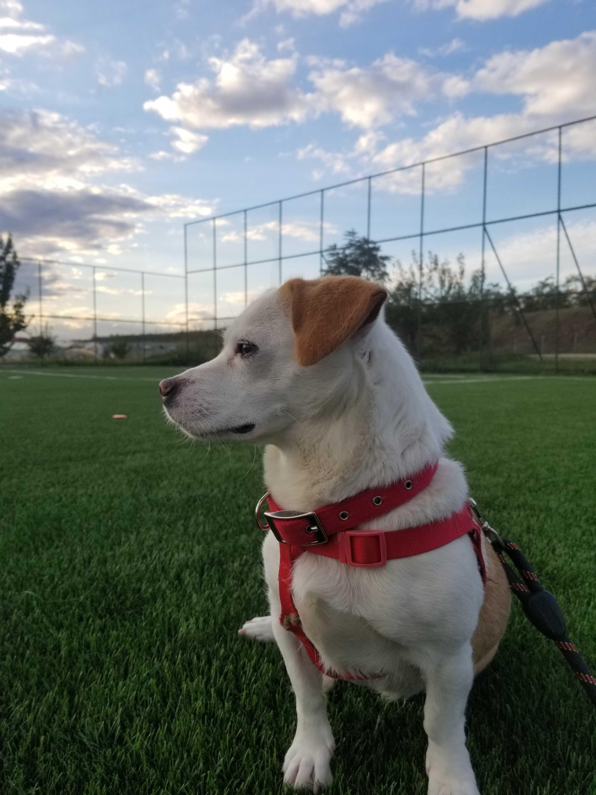

.jpg)
| The Jack Chi | |
|---|---|
|  | |
| Common nicknames | Jackahuahua |
| Traits | |
| Dog Breed Group | Mixed Breed Dogs |
| Height | 12 to 15 inches |
| Weight | 8 to 18 pounds |
| Life Span | 13 to 18 years |
| Color | white, tan, black, and combinations |
| Rescue groups | |
| Chihuahua Rescue & Transport | |
| Jacks Galore | |
The Jack Chi, also known as the Jackahuahua, is a small cross between the Jack Russell Terrier and Chihuahua dog breeds. Friendly, playful, and energetic, these spunky companions inherited some of the best qualities from both of their parents. Weighing roughly 8 to 18 pounds, the Jack Chi is compact and sturdy, similar to their Jack Russell Terrier lineage, with a short, sleek coat that comes in various colors including white, tan, black, and combinations.
In terms of personality, Jack Chis are affectionate and loyal. They often form strong bonds with their owners, sometimes even becoming rather protective of them thanks to their Chihuahua-influenced temperament. They are intelligent and active dogs who thrive on mental and physical stimulation, making them excellent for families who can keep up with their playful energy. While they are friendly and social, they may be wary of strangers, another trait inherited from their Chihuahua lineage. Early socialization and training are crucial to ensure they develop into well-rounded pets.
Jack Chis have short to medium-length coats that can vary in texture, often depending on which parent breed they take after more. Their coats are typically smooth and sleek, though some may inherit a slightly rougher texture from the Jack Russell side. When it comes to color, Jack Chis exhibit a wide range of possibilities, including solid, bi-color, or tri-color patterns. Common coat colors include black, white, tan, brown, and cream, often combined in unique markings such as patches or spots. Some Jack Chis may even display a brindle or merle pattern. Their low-maintenance coats make grooming relatively easy, usually requiring only regular brushing to keep them looking tidy and healthy.
The Jack Chi is known for their spirited personality, inhering the energetic nature of the Jack Russell Terrier and the loyal, sometimes feisty traits of the Chihuahua. Jack Russell Chihuahuas are highly social and thrive on interaction with their family, forming strong bonds with their owners. They are playful and love to be involved in daily activities, whether it’s going for a walk, playing fetch, or simply snuggling on the couch. Their small size doesn’t diminish their confidence, and they often display a bold, outgoing attitude.
While they are loving and friendly with their families, Jack Chis may exhibit a wary or protective demeanor around strangers, a trait inherited from the Chihuahua side. Early socialization is crucial to help them become more comfortable in new environments and with unfamiliar people. They are intelligent dogs that respond well to training, although their independent streak may require patience and consistency.
Jack Chis are also known for their alertness and may bark to signal any unusual activity, making them good watchdogs despite their size. With proper training and socialization, they make loyal, fun-loving companions well-suited for families, singles, and seniors alike.
Early socialization and positive reinforcement training are crucial due to their intelligence and potential stubbornness. Of course, their intelligence allows them to pick up commands quickly, so early training is key to establishing good behavior from the start. Use praise, treats, and affection to reward desired behavior. Jack Chis respond well to positive reinforcement, and this approach will keep them motivated and engaged.
As with all dogs, it’s important to keep up your Jack Russell Terrier Chihuahua mix’s regular veterinary checkups to detect any health concerns early. Your vet can help you develop a care routine that will keep your dog healthy.
Jack Chis require a moderate amount of daily exercise to keep them healthy and happy. They typically need about 30 to 60 minutes of exercise per day, which can include a mix of walks, playtime, and mental stimulation.
Grooming a Jack Russell Chihuahua involves maintaining their coat, ears, nails, and teeth. Their grooming needs are typically straightforward due to the low-maitenance coat of parent breeds.
An ideal Jack Chi diet should be formulated for a small-sized breed with medium energy. It is important to make sure your Jack Chi doesn’t overeat as, just like other small dogs, their bodies do not handle excess weight well. As with all dogs, the Jack Chi’s dietary needs will change from puppyhood to adulthood and will continue to change into their senior years. You should ask your veterinarian for recommendations about your Jack Chi’s diet, as there is far too much variation among individual dogs.
The Jack Chi is an excellent choice for families due to their affectionate and playful nature. These dogs form strong bonds with their owners and thrive in environments where they can be part of the action. Their small size makes them suitable for families with limited space, such as those living in apartments, but they do best in homes where they receive plenty of attention and activity.
Jack Chis are known for their energetic and lively personalities, making them great playmates for older children who can handle their enthusiasm. However, due to their small size and delicate build, they should be supervised around younger children to prevent accidental injuries.
Jack Chis can get along well with other dogs, but their compatibility often depends on their individual temperament and socialization. Their Jack Russell Terrier lineage brings a strong prey drive and a bold, sometimes dominant personality, while their Chihuahua side may make them a bit wary or territorial. However, with proper introductions and early socialization, Jack Chis can learn to coexist peacefully with other dogs.
Jack Chis are generally healthy dogs, but like all breeds, they can be prone to certain health issues. Regular vet visits are essential for maintaining their health. Common health problems that Jack Chis may experience include:
The price of a Jackahuahua puppy typically ranges from $500 to $1,000. The cost can vary based on factors such as the breeder’s reputation, the puppy’s bloodline, and location. While the Jack Chi isn’t a highly trendy designer breed, there are still reputable breeders who specialize in them. However, a great option to consider is starting with rescues, where you may find a loving companion at a more affordable price.